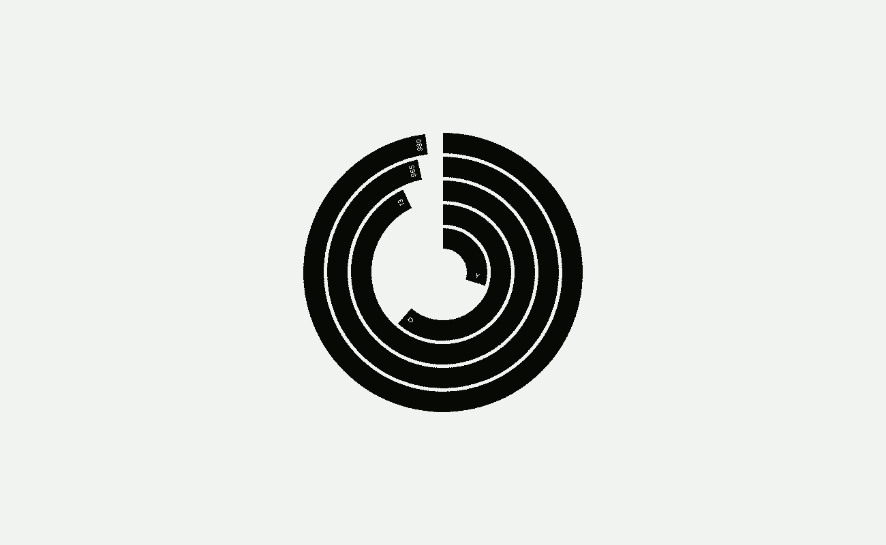

Concentric is a polar clock inspired by and based on this Pen. View it here.
It consists of five concentric rings which, from the innermost ring going outward, represent the Mortem clock, the current month, the current date, the current decimal clock beat, and the current decimal clock pulse.
EG1 7U1 7.8 D7.4 V0.5